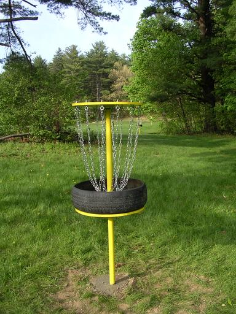
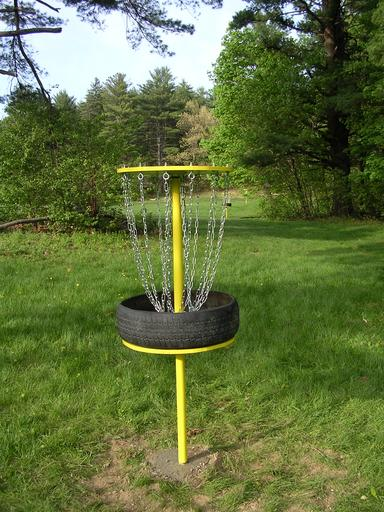

The JSR-113
expert group has been working on the JSAPI 2.0 specification for nearly 3
years (!). JSAPI 2.0 is an update to the Java Speech API and is
targeted at the J2ME platform (CLDC in particular). This week the
expert group released the first community draft of the specification for
community review. This is a significant step for the group and the
specification.
Wednesday May 19, 2004
Tuesday May 18, 2004
If you are interested in learning some of the nitty-gritty details
about how the Sphinx-4 speech recognizer works, check out the paper The Design of the CMU Sphinx-4 Decoder.
Thursday May 13, 2004
Keep an eye on Sphinx-4 .
This is an open source speech recognition system developed completely
in Java. It is the result of a collaboration between the folks at
Carnegie-Mellon, Mitsubshi and Sun Microsystems. We are getting close
to our first 'alpha' release. Of course, if you are very eager you can
just grab the source from the CVS repository.
Wednesday May 12, 2004
One of the really nice benefits of working at Sun is their flexible office and work from home programs. I've been working from home now for a couple of years. I go into the office just one day a week. Its great for my productivity, and for my family life too, I get to see the kids before and after school, and I save lots of time normally spent sitting on route 3. Of course, sitting behind a computer day in and day out isn't exactly great for my physique (not that programmers are supposed to care ..), so I've taken up walking on a daily basis. I've been walking about 9 miles a day. Today was a milestone day, I managed to go the whole day without driving anywhere. Since Sunday I've driven exactly 7 miles and have walked 27 miles ... alas tomorrow is my day to drive into Burlington ... so that will be 50 miles of driving just in one day. Ah well...
Monday May 10, 2004
When the PC first came out back in the early 80s they had very
primitive sound capabilities. They could beep and click and nothing
else. One very small company started shipping a sound card (called
SoundBlaster) that you could plug into one of your free slots on our PC.
There wasn't much you could do with it at first, but then slowly, some
games started to take advantage of the card. The gaming experience
with 'high' quality sound was much improved, and soon the gamers started
to buy the card. A few years later, the sound card had trickled down
from the gamer's PC to the standard office PC. Now every PC now has high
quality sound, thanks to the gamers.
A dozen years ago, when the gamers were playing Doom, a small company called 3dfx introduced a hardware accelerator for 3d graphics. As with sound there was not much that you could do with such a beast but play games like Quake. Again, the gaming experience with a 3D accelerator was much improved, the gamers bought them in droves. Now, every PC comes with a 3D accelerator. We are starting to see 3D graphics move out of the gaming world and onto the desktop. Witness Looking Glass, a 3D desktop (written in Java no less).
Now, we are starting to see the gamers toy with speech technology. One of the latest 3D shooters, Unreal Tournament 2004 uses speech recognition technology to allow the player to control their 'bot team mates. It relies on the Microsoft speech sdk (a free download).
Time will tell whether the gamers will find that speech enhances the gaming experience enough so that it becomes ubiquitous, but if it does, it may be the push that speech needs to get it accepted into the wider world of the desktop. Follow the gamers.
In JNN (The Juicy News Network) , FreeTTS announces new articles on various news feeds. As with most things on the web, news feeds are not always named with words that are found in the dictionary. In my current set of feeds, I have words like slashdot, javapedia, MacRumors, eJournal, salon.com. None of these words are in the FreeTTS lexicon. Furthermore, FreeTTS will look up words after tokenization, so text like 'salon.com' gets turned into 'salon com' ... there is no more 'dot' in '.com'.
Certainly, it would be helpful if an application could easily extend the lexicon of FreeTTS. FreeTTS does have a lexicon called the addenda that is for this, but, unfortunately, it is somewhat buried, and hard to use it that way. So to fix up the JNN pronunciations, I had to write a little function that would filter the text and fix up the pronunciations.
To do this I used the java.util.regex package to search and fixup the text. It is incredibly easy to use and quite powerful. For instance here are some code snippets:
Here's a snippet that turns 'salon.com' to 'salon dot com'.
private static Pattern dotComPattern = Pattern.compile("(\\S)\\.(\\S)");
description = dotComPattern.matcher(description).replaceAll("$1 dot $2");
Here's a snippet that replaces wiki words with space separated words. TheOneRing would become The One Ring. Another two liner:
private static Pattern wikiPattern = Pattern.compile("([a-z])([A-Z])");
m = wikiPattern.matcher(description).replaceAll("$1 $2");
Finally, in a bit of irony, FreeTTS can't pronounce its own name, so I fix that up to turning it into 'free TTS' .
With this set of changes, JNN is reading and announcing articles with
much more understandable pronunciations, It's tongue is less tied.
Still, it would be better to have a more systematic method of addressing
such unusual pronunciations. Two possiblities: a user editable lexicon,
or annotating rss feeds with pronunciation information.
You can check out this code in the RSSAnnouncer.java - part of JNN code repository.
Sunday May 09, 2004
Over the weekend about a dozen of these mystery objects suddenly
appeared in the local park. I have no idea what they are. If you have
any ideas, please let me know.


The bimonthly internet ray tracing competition (IRTC) theme for
March / April was "Great Inventions". Check out the submissions on the viewing page . Here's one of my favorites . This one is nice too. It is hard to believe that some of these are not photographs.
{kind=link}
{kind=link}
Friday May 07, 2004
My son likes to play a game called NeverWinter Nights on my laptop
(a windows XP system from Dell). Every so often, while he's playing,
something goes awry: the game freezes, the computer locks up, and the
only recourse is to power off the machine and power it back up again.
I'd say the average uptime for this machine is 6 hours, but hey -- its a
laptop, you are supposed to shut it down to save batteries aren't you?
My desktop home machine is a generic linux box. Its average uptime is about 30 days or so. The last time I brought it down was to upgrade the video card. Power glitches account for most of the reboots. I can't recall a time when I had to reboot the system to unwedge it.
When working on Sphinx-4, I work primary on an UltraSparc III system called 'glottis'. We received this system on April 8th, 2003. Here is the complete history of system reboots:
[email protected]% last reboot reboot system boot Wed Apr 9 07:39 reboot system boot Wed Apr 9 06:35 reboot system boot Wed Apr 9 06:31 reboot system boot Tue Apr 8 17:05
That's April 9th 2003. This system has been running for nearly 400 days, and in fact has only been rebooted 4 times in its entire lifetime! This system was taken out of its shipping box, plugged into the UPS, powered on, a couple of OS patches were applied, and that was that. It just runs and runs.
Netcraft keeps tabs on the top 50 sites with the longest uptime. Amazingly enough all of the top 50 systems are BSD or FreeBSD systems. The top five systems have all been running for 5 years straight! One may well wonder why there are no Solaris and Linux boxes in the top 50. According to the NetCraft FAQ: HP-UX, Linux, NetApp NetCache, Solaris and recent releases of FreeBSD cycle back to zero after 497 days, exactly as if the machine had been rebooted at that precise point. Thus it is not possible to see a HP-UX, Linux or Solaris system with an uptime measurement above 497 days. That's an unfortunate bug, I bet we'd see many Solaris and Linux boxes in the top 50.
It would really be great if all my computers could have uptimes measured in years not in hours. I wince every time I hear the sound of disks being abruptly powered down when my son hits the power-off button on the laptop. That's just not right. Well, apparently, there is a version of NeverWinter nights for Linux. Maybe it is time to put the Java Desktop System on the laptop.
Wednesday May 05, 2004
Actors keep track of how far removed they are from Kevin Bacon (Six degrees of Kevin Bacon), and mathematicians keep track of their Erdos Number which represents their distance from mathematician Paul Erdos.
It seems only natural that Java programmers should keep track of their JagNumber. A programmer's JagNumber represents their distance from the father of Java - James A. Gosling. James' JagNumber is zero. He is the only person with a JagNumber of zero. Anyone who has collaborated with James on a Java project has a JagNumber of 1. People who have written code with someone with a JagNumber 1 have a JagNumber 2, and so on.
Last month I spent a few hours over a weekend and added FreeTTS support to The Juicy News Network (JNN) an RSS client written in Java by none another than James Gosling. This two day collaboration gives me a JagNumber of one! woohoo! That's as low as I can go.
If you are looking to lower your own JagNumber take a look at the FreeTTS project or the Sphinx-4 project. If have some code to contribute to these open source speech engines you can lower your JagNumber to two. Imagine the bragging rights at the local pub.
Tuesday May 04, 2004
I've collected some more performance data for Sphinx-4
In particular, I've been comparing our Sphinx-4 performance against
Sphinx 3.3 (the fast, large vocabulary recongizer written in C). One
thing that is great about working on speech recognition systems is that
they are pretty easy to compare. I just have to compare the accuracy
(expressed as a word error rate - WER) and the speed expressed in terms of real time (RT). For both of these metrics, lower is better. This table - Sphinx 3.3 vs. Sphinx 4 Performance
shows how well Sphinx-4 performs compared to Sphinx 3.3 for a wide
range of vocabularies (from very small with 11 words, to very large with
60,000 words).
This table shows that for all tests except for the very large vocabulary test (hub4) we are running faster and more accurate than Sphinx 3.3. We are still working on improving the large vocabulary performance .. we are almost there.
One of my primary tasks right now is improving the speed of the Sphinx-4
recognizer. There are three battle-lines in this war on slowness:
improving algorithms, improving application tuning, and optimizing the
code. One of my primary tools in the war is Jfluid
, a Java application profiler developed by the folks at Sun's research
lab. JFluid works differently from other profilers ... instead of sampling
your application periodically to find out where time is being spent, it
instruments the byte codes. This has a number of advantages. First of all,
the profiling results are exact, not approximate. Due to the vagaries of
sampling, other profilers are apt to miss calls to some methods entirely.
Since JFluid instruments the byte codes, it never misses a thing. If
Jfluid says that a method has been called 1,232,123 times, you know that
it really was. JFluid also lets you select a narrow subset of your
application to profile. For instance, the typical recognition inner loop
looks like this:
while (!done) {
scorePaths();
prunePaths();
growPaths();
}
with a substantial fraction of the work taking place in growPaths(). With
JFluid, you can turn on profiling for growPaths() and every method that is
called (directly or indirectly) from growPaths() while leaving profiling
off for scorePaths() and prunePaths(). Other profilers I've used require
you to turn profiling on for the whole application which results in my
having to wait much longer for answers as the profiler wastes time
collecting data on scorePaths() and prunePaths().
JFluid is one of the best kept Java secrets. If you are working to improve your application's performance I highly recommend giving JFluid a try.
Monday May 03, 2004
Now that we have the first post out of the way, lets get right down to
business. First, who am I? I am a member of the Sun's research lab. I am
part of the speech team where we spend our time looking at issues relating
to speech synthesis and speech recognition.
Most recently the speech team has been creating speech engines written entirely in the Java(TM) programming language. First, there is FreeTTS a speech synthesis engine written in Java, and there is Sphinx-4 - a speech recognition engine written in Java. Both of these engines have been released as open source under a BSD style license at SourceForge. FreeTTS has been available for a few years now, and is in use on a number of projects. We are moving toward an official Sphinx-4 release RSN.
In this blog I hope to keep track of some of the issues involved in writing on speech engines. Some issues that I'll probably touch on from time to time are:
- Java performance
- Improving accuracy of a recognizer
- Open source development techniques
Well, here it is, my first weblog on the new blogs.sun.com site.
Thanks to all who made this happen including Tim Bray for getting the
Sun policy squared away, and William Snow for setting blogs.sun.com up.
This blog copyright 2010 by plamere